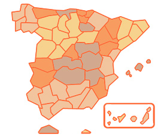

El Tiempo En España Por Provincias

Selecciona La Provincia
A Coruña
Álava
Albacete
Alicante
Almería
Asturias
Ávila
Badajoz
Barcelona
Burgos
Cáceres
Cádiz
Cantabria
Castellón
Ceuta
Ciudad Real
Córdoba
Cuenca
Girona
Granada
Guadalajara
Guipúzcoa
Huelva
Huesca
I. Baleares
Jaén
La Rioja
Las Palmas
León
Lleida
Lugo
Madrid
Málaga
Melilla
Murcia
Navarra
Ourense
Palencia
Pontevedra
Salamanca
Segovia
Sevilla
Soria
Tarragona
Tenerife
Teruel
Toledo
Valencia
Valladolid
Vizcaya
Zamora
Zaragoza